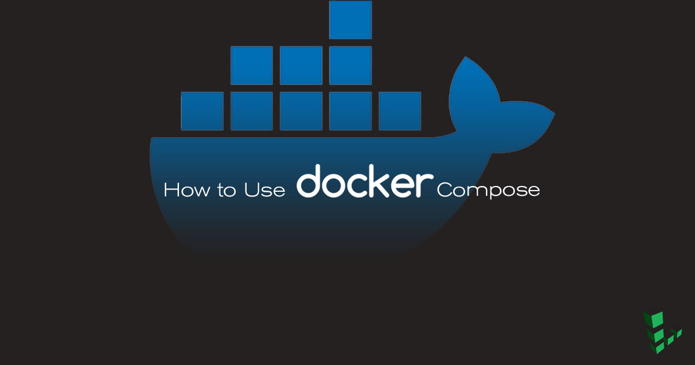
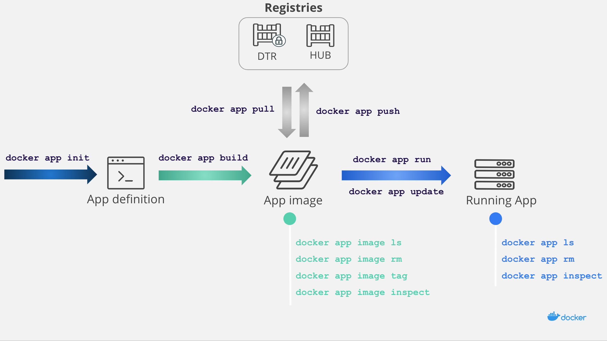
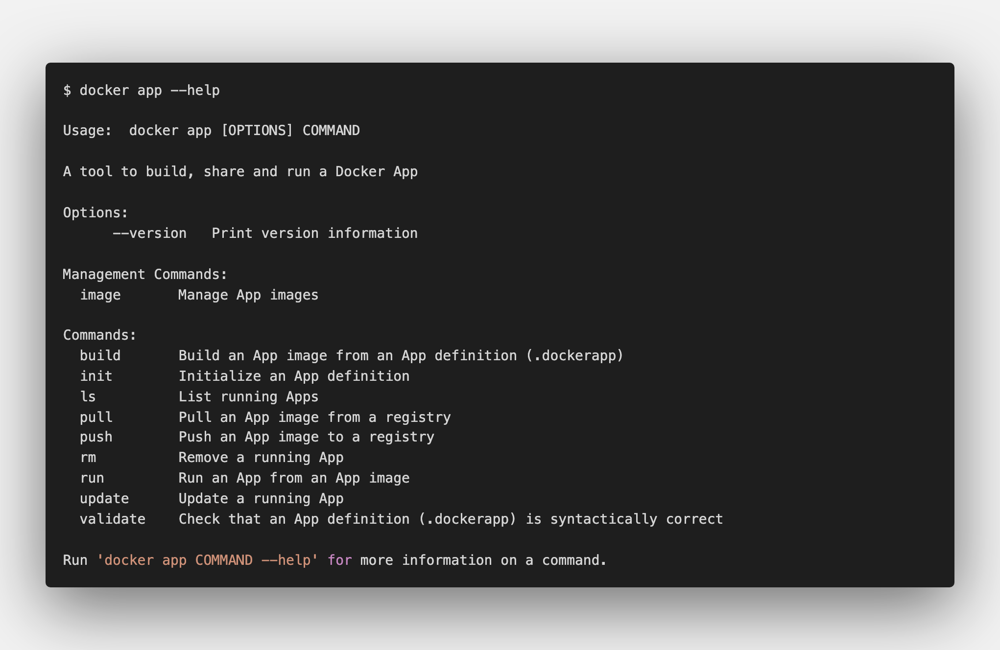
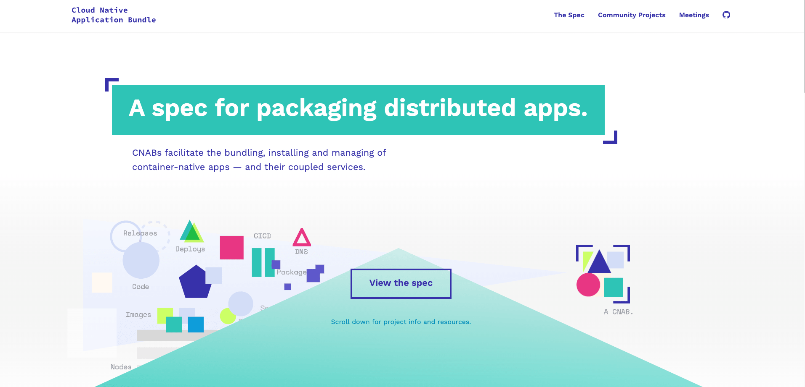
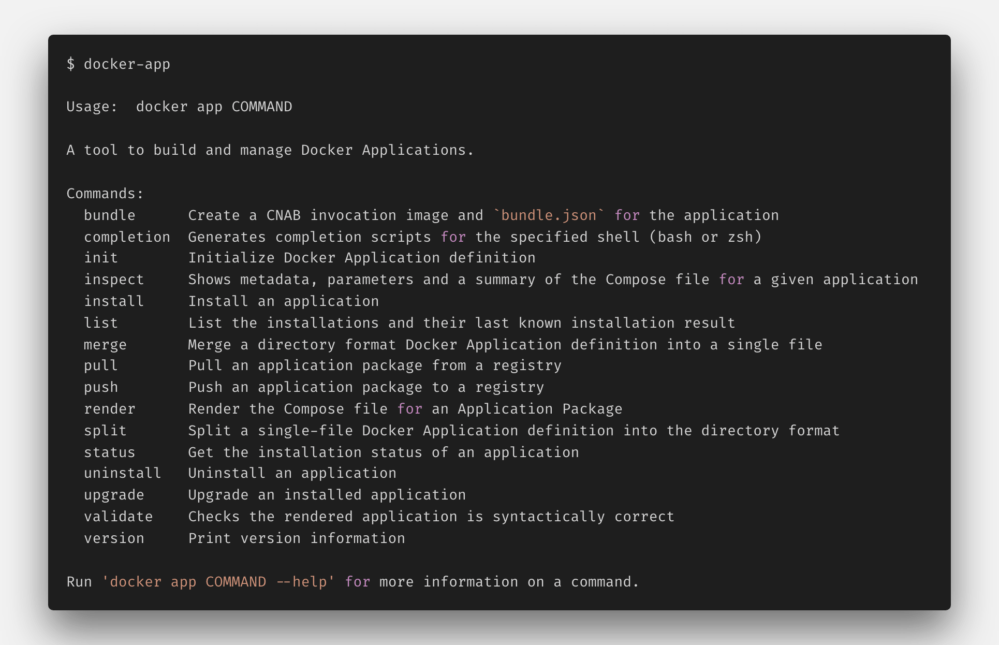

该工具的主要作用就是用于配置/管理/共享和安装应用程序的 Docker 客户端插件

1. 背景介绍
本部分主要介绍了关于 docker-app 工具的背景和开发原因
咳咳咳咳咳咳，我们很熟悉且清楚的知道，通过在 docker-compose.yml 文件中对一组服务进行描述，就可以在 Docker 上用一条命令轻松的启动一个简单的单服务应用程序或一个复杂的多服务应用程序。这种易用性使得 Docker Compose 非常适合开发团队快速构建项目环境以及测试环境的搭建。目前，GitHub 上有超过 3.5k 多个项目在使用 Docker Compose 了。
随着时间的推移，Compose 不断发展并添加了许多功能可以将相同的应用程序部署到生产环境时提供帮助。例如，指定大量副本、内存资源限制或自定义系统日志服务器，但这些属性可能会跟您自己的环境有所差异。有许多不同的策略来解决这个问题，但是最常见的就是依赖于复制和粘贴。例如，为在不同环境中运行的同一应用程序维护多个 Compose 文件是相当常见的，但这会导致了两个问题：
- 通过
DockerHub官方仓库，我们一直都在分享Docker镜像，但却没有一个很好的方法来共享使用它们的多服务应用程序； - 开发人员和运维人员很难围绕同一个
Compose文件进行协作，并在产品部署到生产环境或者客户环境之前捕获配置问题； - 因为服务部署往往不是一个容器可以解决的，所以需要搭配多个容器同时使用，怎么样便捷、合理的进行部署就是一个很大的问题；
解决上述问题的一种方法就是通过构建一个与 Compose 相辅相成的工具来使它更容易用于共享和协作。需要注意的是，现在这个项目还属于实验性阶段，还有很多工作正在进行中，所以不建议再生产环境中使用。

2. 工具安装
安装方法比较通用，基本都是这个套路
在最新的版本中 Docker App 已经变成了一个 docker 内置的命令行插件，它将 docker 命令扩展为 app 子命令。 因为现在还是在实验阶段，所以启动该功能的话，需要 docker 版本在 19.03.0 以更高版本中设置环境变量 EXPERIMENTAL=true 才可以使用。
- [1] 安装方式 - MacOS
# Download Mac OS Tarball
$ export OSTYPE="$(uname | tr A-Z a-z)"
$ curl -fsSL --output "/tmp/docker-app-${OSTYPE}.tar.gz" "https://github.com/docker/app/releases/download/v0.8.0/docker-app-${OSTYPE}.tar.gz"
$ tar xf "/tmp/docker-app-${OSTYPE}.tar.gz" -C /tmp/
# Install as a Docker CLI plugin
$ mkdir -p ~/.docker/cli-plugins
$ cp "/tmp/docker-app-plugin-${OSTYPE}" ~/.docker/cli-plugins/docker-app
- [2] 安装方式 - Windows
# Download Windows Tarball
$ Invoke-WebRequest -Uri https://github.com/docker/app/releases/download/v0.8.0/docker-app-windows.tar.gz -OutFile docker-app.tar.gz -UseBasicParsing
$ tar xf "docker-app.tar.gz"
# Install as a Docker CLI plugin
$ New-Item -ItemType Directory -Path ~/.docker/cli-plugins -ErrorAction SilentlyContinue
$ cp docker-app-plugin-windows.exe ~/.docker/cli-plugins/docker-app.exe
- [3] 命令使用

3. 工具使用
易于在不同团队和不同环境之间共享和管理
Docker App 是在 2018 年 DockerCon 美国大会上简要介绍的一款新工具，其主要作用就是使 Compose 应用程序更易于在不同团队和不同环境之间共享和管理，并可在Docker Hub上共享。主要功能如下所示：
- 使用元数据(
metadata)和参数扩展(parameters)来辅助Compose使用 - 在多种环境(
Development/QA/Staging/Production)中可重用相同的Compose应用程序 - 与容器镜像(
images)拥有相同的工作流，支持Push/Pull/Signing等操作 - 完全符合
CNAB(Cloud Native Application Bundle)标准 - 完全支持
Docker Contexts
- [1] 什么是 CNAB 标准
CNAB 是一个开源的、与云无关的规范，用于打包和运行分布式应用程序，旨在解决其中的存在的问题。CNAB 将跨不同工具链的多服务分布式应用程序的管理统一为一种单一的、一体化的打包格式。

Docker App 的最新版本就是一个实现当前 CNAB 规范的工具，而关于 CNAB 规范的更多详情可以在官方网站 cnab.io 上找到。这意味着它既可以为 Compose 构建 CNAB 包（可以与任何其他 CNAB 客户端一起使用），也可以安装、升级和卸载任何其他 CNAB 包。
- [2] 在 DockerHub 上共享 CNAB 包
单独的 Compose 文件的局限在于它们无法在 Docker Hub 上进行共享。Docker App 很好的解决了这个问题。这是一个简单的 Docker 应用程序，运行它将启动了一个非常简单的 hello world 应用程序。
# 必须v3.2版本+才能用
# docker-compose.yml
version: "3.6"
services:
hello:
image: hashicorp/http-echo
command: ["-text", "${text}"]
ports:
- ${port}:5678
通过 docker app init 命令已经上述的 docker-compose.yml 文件初始化生成其他配置文件。
# 初始化生成其他配置文件
$ docker app init --compose-file docker-compose.yml hello
Created "hello.dockerapp"
# 得到如下目录结构
$ tree
.
├── docker-compose.yml
└── hello.dockerapp
├── docker-compose.yml # 基础compose文件
├── metadata.yml # 该compose镜像的相关信息
└── parameters.yml # compose文件中的参数对应值
我们需要根据实际情况，补全上述 metadata.yml 和 parameters.yml 文件中的内容，其实更加完整。
# metadata.yml
version: 0.1.0
name: hello
description: A simple nginx text server
maintainers:
- name: escape
email: escape@docker.com
# parameters.yml
port: 5678
text: hello development
现在，我们就可以构建一个该镜像包并在 DockerHub 上共享、分享它。
# 本地Build镜像
$ docker app build . -f hello.dockerapp -t escape/nginx_test:0.1.0
[+] Building 0.7s (6/6) FINISHED
(...) (Build output)
sha256:4a492748ae55170daadd1ddfff4db30e0ef3d38bf0f57a913512caa323e140de
# 上传到我们自己的HubDocker仓库下面
$ docker app push escape/nginx_test:0.1.0
# 镜像加速(换命)
https://github.com/Azure/container-service-for-azure-china/blob/master/aks/README.md#22-container-registry-proxy
Compose 文件中的所有信息都存储在 DockerHub 上的 CNAB 包中。您可能注意到了，它也是参数化的，因此可以在运行时替换它的值来满足部署要求。我们也可以直接从 DockerHub 安装应用程序。
# 查看远程镜像信息
$ docker app image inspect escape/nginx_test:0.1.0 --pretty
# 拉去远程并运行容器
$ docker app run --name nginx escape/nginx_test:0.1.0 --set ports=8080
后续操作相关命令，实例说明。
# 列出正在运行的APP程序
$ docker app ls
RUNNING APP APP NAME LAST ACTION RESULT CREATED
nginx hello-world (0.1.0) install success About a minute ago
# 移除运行的APP程序
$ docker app rm nginx
Removing service nginx
Removing network nginx_default
4. 调用方式
我们可以直接调用远程主机上面的 docker 引擎来部署服务。
虽然我们可以通过 docker-compose 工具快速搭建一套开发环境，但是首先我们需要在操作系统上安装和部署 docker 的容器引擎。而为了应对远程部署这样的问题，docker-compose 工具支持通过 DOCKER_HOST 环境变量和 -H/–host 命令行的方式来远程调用远程计算器上面的 docker 容器引擎。
我们定义一个 Compose 文件，该文件分为两项服务，前端运行 nginx 代理，该代理会将 HTTP 请求转发到简单的 Go 应用服务器。项目结构和对应的配置文件，我们可以看下面内容。
# 目录结构
$ tree hello-docker
hello-docker
├── backend
│ ├── Dockerfile
│ └── main.go
├── docker-compose.yml
├── frontend
├── Dockerfile
└── nginx.conf
# docker-compose.yml
version: "3.6"
services:
frontend:
build: frontend
ports:
– 8080:80
depends_on:
– backend
backend:
build: backend
可以通过如下命令，在本地主机上运行。按照 docker-compose.yml 中的描述，检查所有容器都在运行，并且前端服务容器的端口 80 已映射到 localhost 的 8080 端口。
$ cd hello-docker/
$ docker-compose up -d
Creating network "hello-docker_default" with the default driver
Creating hello-docker_backend_1 … done
Creating hello-docker_frontend_1 … done
$ curl localhost:8080
## .
## ## ## ==
## ## ## ## ## ===
/"""""""""""""""""\___/ ===
{ / ===-
\______ O __/
\ \ __/
\____\_______/
Hello from Docker!
这里主要说的是，如果运行在远程主机上。远程 Docker 主机是我们本地网络内部或外部的机器，该机器正在运行 Docker 服务并提供有用于查询 Docker 引擎 API 的端口。在开启 SSH 访问权限的前提下，可以通过以下几种方式将示例应用程序部署在远程主机上。
- [1] SSH 登录远程主机部署
# 那为什么不直接登录远程主机部署呢？
$ scp -r hello-docker user@remotehost:/path/to/src
$ ssh user@remotehost
$ pip install docker-compose
$ cd /path/to/src/hello-docker
$ docker-compose up -d
- [2] 使用 DOCKER_HOST 环境变量
# DOCKER_HOST或者-H/–host
$ cd hello-docker
$ DOCKER_HOST="ssh://user@remotehost" docker-compose up -d
- [3] 设置 docker contexts 配置
# Docker上下文是在不同部署目标之间自动切换的有效方法
$ docker context ls
NAME DESCRIPTION DOCKER ENDPOINT KUBERNETES ENDPOINT ORCHESTRATOR
remote ssh://user@remotemachine
$ cd hello-docker
$ docker-compose ‐‐context remote up -d
Docker 上下文是一种为 Docker API 端点提供名称并存储该信息以供以后使用的机制。如文档所示，可以使用 Docker CLI 轻松管理 Docker 上下文。最新版本的 docker-compose 现在支持使用上下文来访问 Docker API 端点。这意味着我们可以运行 docker-compose 并指定上下文以自动控制远程主机。如果未指定上下文，则 docker-compose 将使用当前上下文，就像 Docker CLI 一样。
- 创建并使用 context 来连接远程主机
# 首先创建一个上下文来保存到它的连接路径
$ docker context create remote ‐‐docker "host=ssh://user@remotemachine"
remote
Successfully created context "remote"
# 查看主机的上下本设置列表
$ docker context ls
NAME DESCRIPTION DOCKER ENDPOINT KUBERNETES ENDPOINT ORCHESTRATOR
default * Current DOCKER_HOST… unix:///var/run/docker.sock swarm
remote ssh://user@remotemachine
$ docker ‐‐context remote ps
CONTAINER ID IMAGE COMMAND CREATED STATUS NAMES
# 设置为docker默认的上下文
$ docker context use remote
remote
Current context is now "remote"
# 查看主机的上下本设置列表
$ docker context ls
NAME DESCRIPTION DOCKER ENDPOINT KUBERNETES ENDPOINT ORCHESTRATOR
default Current DOCKER_HOST … unix:///var/run/docker.sock swarm
remote * ssh://user@remotemachine
- 在 docker-compose 中使用 context
# 通过上下文来访问远程主机
$ docker-compose ‐‐context remote up -d
/tmp/_MEI4HXgSK/paramiko/client.py:837: UserWarning: Unknown ssh-ed25519 host key for 10.0.0.52: b'047f5071513cab8c00d7944ef9d5d1fd'
Creating network "hello-docker_default" with the default driver
Creating hello-docker_backend_1 … done
Creating hello-docker_frontend_1 … done
# 查看远程主机运行的服务
$ docker ‐‐context remote ps
CONTAINER ID IMAGE COMMAND CREATED STATUS PORTS NAMES
ddbb380635aa hello-docker_frontend "nginx -g 'daemon of…" 24 seconds ago Up 23 seconds 0.0.0.0:8080->80/tcp hello-docker_web_1
872c6a55316f hello-docker_backend "/usr/local/bin/back…" 25 seconds ago Up 24 seconds hello-docker_backend_1
许多开发人员可能需要在多个开发/测试环境之间进行切换，现在通过在 docker-compose 中使用上下文，可以轻松实现所有这些部署。现在我们尝试在多个 Docker 引擎之间进行上下文切换，为此我们定义了三个目标，下表显示了上下文到 docker 目标的映射。
- 运行本地
Docker引擎的本地主机 - 通过
ssh访问的远程主机 - 一个
Docker-in-Docker容器充当另一个远程主机
| Target Environment | Context name | API endpoint |
|---|---|---|
| localhost | default | unix:///var/run/docker.sock |
| remote-host | remote | ssh://user@remotemachine |
| docker-in-docker | docker | tcp://127.0.0.1:2375 |
# run a Docker-in-Docker container
$ docker run ‐‐rm -d -p "2375:2375" ‐‐privileged -e "DOCKER_TLS_CERTDIR=" ‐‐name dind docker:19.03.3-dind
ed92bc991bade2d41cab08b8c070c70b788d8ecf9dffc89e8c6379187aed9cdc
# look container is running
$ docker ps
CONTAINER ID IMAGE COMMAND CREATED STATUS PORTS NAMES
ed92bc991bad docker:19.03.3-dind "dockerd-entrypoint.…" 17 seconds ago Up 15 seconds 0.0.0.0:2375->2375/tcp, 2376/tcp dind
# create a new context 'dind' to easily target the container
$ docker context create dind ‐‐docker "host=tcp://127.0.0.1:2375" ‐‐default-stack-orchestrator swarm
dind
Successfully created context "dind"
# lock docker context list
$ docker context ls
NAME DESCRIPTION DOCKER ENDPOINT KUBERNETES ENDPOINT ORCHESTRATOR
default * Current DOCKER_HOST … unix:///var/run/docker.sock swarm
remote ssh://user@devmachine swarm
# 切换当前上下文为dind
$ docker context use dind
dind
Current context is now "dind"
# 启动服务
$ docker-compose up -d
Creating network "hello-docker_default" with the default driver
Creating hello-docker_backend_1 … done
Creating hello-docker_frontend_1 … done
# 可以看到服务已经运行了
$ docker ps -a
CONTAINER ID IMAGE COMMAND CREATED STATUS PORTS NAMES
951784341a0d hello-docker_frontend "nginx -g 'daemon of…" 34 seconds ago Up 33 seconds 0.0.0.0:8080->80/tcp hello-docker_frontend_1
872c6a55316f hello-docker_backend "/usr/local/bin/back…" 35 seconds ago Up 33 seconds hello-docker_backend_1
# 通过context查看
$ docker ‐‐context default ps
CONTAINER ID IMAGE COMMAND CREATED STATUS PORTS NAMES
ed92bc991bad docker:19.03.3-dind "dockerd-entrypoint…." 28 minutes ago Up 28 minutes 0.0.0.0:2375->2375/tcp, 2376/tcp dind
# 远程主机运行
$ docker-compose ‐‐context remote up -d
/tmp/_MEIb4sAgX/paramiko/client.py:837: UserWarning: Unknown ssh-ed25519 host key for 10.0.0.52: b'047f5071513cab8c00d7944ef9d5d1fd'
Creating network "hello-docker_default" with the default driver
Creating hello-docker_backend_1 … done
Creating hello-docker_frontend_1 … done
# 切换当前上下文为default
$ docker context use default
default
Current context is now "default"
$ docker-compose up -d
Creating network "hello-docker_default" with the default driver
Creating hello-docker_backend_1 … done
Creating hello-docker_frontend_1 … done
$ docker ps -a
CONTAINER ID IMAGE COMMAND CREATED STATUS PORTS NAMES
077b5e5b72e8 hello-docker_frontend "nginx -g 'daemon of…" About a minute ago Up about a minute 0.0.0.0:8080->80/tcp hello-docker_frontend_1
fc01878ad14e hello-docker_backend "/usr/local/bin/back…" About a minute ago Up about a minute hello-docker_backend_1
ed92bc991bad docker:19.03.3-dind "dockerd-entrypoint…." 34 minutes ago Up 34 minutes 0.0.0.0:2375->2375/tcp, 2376/tcp dind
5. 高级玩法
以投票应用程序为例，展示如何使用现有
Compose文件创建Docker应用程序。
- docker app init
$ docker app init voting-app --compose-file docker-compose.yml
Created "voting-app.dockerapp"
$ tree
.
├── docker-compose.yml
├── voting-app.dockerapp
├── docker-compose.yml
├── metadata.yml
└── parameters.yml
- docker-compose.yml
version: "3.6"
services:
redis:
image: redis:alpine
ports:
- "6379:6379"
db:
image: postgres:9.4
ports:
- "5432:5432"
vote:
image: dockersamples/examplevotingapp_vote:before
ports:
- "${vote.port}:80"
deploy:
replicas: ${vote.replicas}
result:
image: dockersamples/examplevotingapp_result:before
ports:
- "${result.port}:80"
worker:
image: dockersamples/examplevotingapp_worker
- parameters.yml
vote:
port: 5000
replicas: 2
result:
port: 5001
6. 写在最后
期望越大，失望越大！
其实这篇博客，我修修改改了好几天了。一方面因为版本的更新，需要整理新版的功能特性以及对于的安装操作步骤；另一方面就是重新编写之前不再适配的内容，达到后续还可以按照该博客正常操作。博客更新完之后，我的内心其实是难过的。在新版本的 0.9.0 中，去除了我认为很重要的功能，就是更新配置文件，来重新生成各种环境的 docker-compose.yml 命令，哎，我感觉我要弃坑了。
下面是之前版本中，可以使用的命令功能，现在已经没有了，砍了 2/3 的子命令。我只能说，拜拜了，您嘞！
